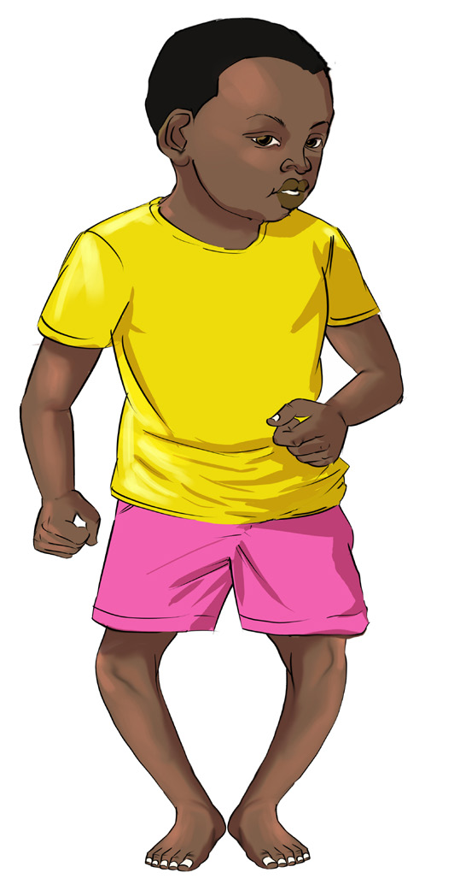

Food and Human Nutrition
Form Two
lacking, the body cannot absorb enough of these minerals, leading to soft and weak bones. Hence, the legs bend to form rickets.
The signs of rickets include knock-knees and bowed legs in children, delayed development of permanent teeth after the removal of milk teeth, bone fractures from slight injuries, growth retardation and deformities in the development of pelvis or the spinal cord. Figure 3.5 illustrates a child with rickets.

Figure 3.5: A child with rickets
Osteomalacia refers to softening of bones, a condition that weakens and makes them fragile. Most often, it is caused by deficiencies in vitamin D, calcium and phosphate in the body.
Signs and symptoms of osteomalacia include bone pain particularly in the
hips, legs, lower back and muscle weakness. Affected individuals may experience difficulty walking or may walk in an unsteady manner. Frequent bone fractures can occur even after minor trauma. Other symptoms include persistent fatigue and, in cases of low calcium levels, numbness around the mouth or in the limbs occurs. In young adults, softened bones can lead to bowing, especially in the weight-bearing bones of the legs. Osteomalacia is more common in women and often develops during pregnancy. In older adults, it may result in fractures and chronic back pain. Rickets and osteomalacia can be prevented by using foods rich in vitamin
D such as liver, oily fish, egg yolk and vitamin D fortified foods. Sitting in the early morning sun allows the skin to absorb ultraviolet light rays which help the body to synthesize vitamin D.
Calcium, phosphorous and vitamin D supplements can also help to prevent rickets or osteomalacia.
(iv) Pellagra
Pellagra is a deficiency disorder due to lack of vitamin B3 (niacin) in the body. It is known as multiple-deficiency disease because it is also caused by intake of diets containing low levels of an essential amino acid tryptophan and other B vitamins like B1 (thiamine) and
B2 (riboflavin). The deficiency of these micronutrients in the body can affect the skin, gastrointestinal tract, and nervous